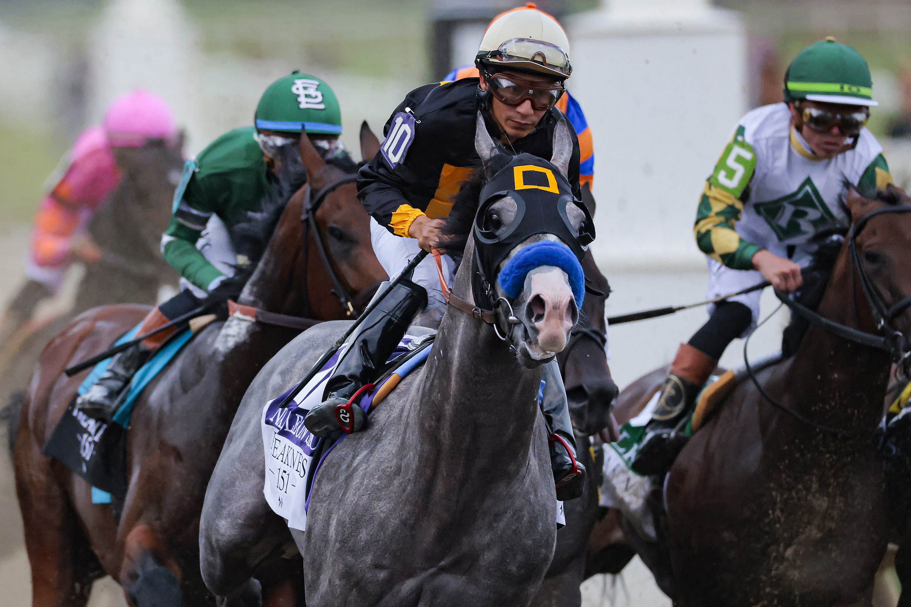

Blog Post
Published - May 16, 2026
2026 Preakness Results: Napoleon Solo Wins at Laurel Park
Napoleon Solo captured the 151st Preakness Stakes at Laurel Park on May 16, 2026, as the race relocated from Pimlico amid a major $400 million renovation.

The middle jewel of the Triple Crown delivered an unforgettable chapter in horse racing history on Saturday, May 16, 2026. Bypassing its traditional home at Pimlico Race Course due to a massive, $400 million infrastructure renovation project, the 151st running of the Preakness Stakes took place on the fast dirt track at Laurel Park in Laurel, Maryland.
With a crowded field of 14 horses—the largest Preakness field assembled since 2011—the race was packed with strategic tension, narrative drama, and ultimate vindication.
When the dust settled down the stretch, it was Napoleon Solo, running at 10-1 odds from the outside Post 10, who surged past the early pacesetters to capture the lucrative $2,000,000 Preakness Stakes purse. Piloted by veteran jockey Paco Lopez, owned by Al Gold, and conditioned by trainer Chad Summers, the Liam's Map colt silenced critics who questioned whether his early-career speed could translate to Classic-level route racing.
The 2026 Preakness Stakes Chart & Complete Finishing Order
The track conditions at Laurel Park were rated as fast, setting up an intense battle of early speed against closing stamina. While the final winning time of 1:58.69 marked one of the slower iterations of the race in recent memory, the tactical maneuvers through heavy traffic kept racing fans on the edge of their seats.
Below is the official final order of finish, margins, and payouts for the $1.2 Million winner's share of the purse:
| Finish | Program No. | Horse | Jockey | Trainer | Final Odds | Margin (Lengths) |
|---|---|---|---|---|---|---|
| 1 | 10 | Napoleon Solo | Paco Lopez | Chad Summers | 7.90 | — |
| 2 | 9 | Iron Honor | Flavien Prat | Chad C. Brown | 8.20 | 1 + 1/4 |
| 3 | 6 | Chip Honcho | José Ortiz | Steven M. Asmussen | 11.10 | 4 + 1/2 |
| 4 | 2 | Ocelli | Tyler Gaffalione | D. Whitworth Beckman | 7.60 | 7 + 1/4 |
| 5 | 12 | Incredibolt | Jaime Torres | Riley Mott | 5.80 | 7 + 1/2 |
| 6 | 8 | Bull by the Horns | Micah Husbands | Saffie A. Joseph Jr. | 19.10 | 9 + 3/4 |
| 7 | 7 | The Hell We Did | Luis Saez | Todd W. Fincher | 9.20 | 12 + 1/2 |
| 8 | 13 | Great White | Alex Achard | John Ennis | 9.30 | 13 |
| 9 | 4 | Robusta | Rafael Bejarano | Doug O'Neill | 28.00 | 13 + 1/4 |
| 10 | 1 | Taj Mahal | Sheldon Russell | Brittany T. Russell | 4.70 | 13 + 3/4 |
| 11 | 11 | Corona de Oro | John R. Velazquez | Dallas Stewart | 17.00 | 17 + 3/4 |
| 12 | 5 | Talkin | Irad Ortiz Jr. | Danny Gargan | 11.50 | 19 + 1/2 |
| 13 | 3 | Crupper | Junior Alvarado | Donnie K. Von Hemel | 29.20 | 21 + 1/4 |
| 14 | 14 | Pretty Boy Miah | Ricardo Santana Jr. | Jeremiah C. Inglehart | 26.20 | 43 |
Official 2026 Preakness Stakes Payouts
The unexpected 10-1 triumph of Napoleon Solo coupled with favored entries dropping back created high-value opportunities for exotic ticket holders at the windows. Learn more about online safety with Identity Theft Prevention: 10 Steps to Protect Yourself Online .
Traditional Wagers
- Napoleon Solo (#10): $17.80 Win | $9.80 Place | $7.40 Show
- Iron Honor (#9): — | $9.20 Place | $6.60 Show
- Chip Honcho (#6): — | — | $8.20 Show
Exotic Vertical Payouts
- $1.00 Exacta (10–9): $53.60
- $1.00 Trifecta (10–9–6): $597.10
- $1.00 Superfecta (10–9–6–2): $2,377.80
Case Study: How Napoleon Solo Defied the Form Cycle
To understand how Napoleon Solo won the 151st Preakness Stakes, handicappers must analyze the classic "hidden form" angle. This serves as an excellent case study in evaluating class over recent running lines.
The Background Flop
Napoleon Solo burst onto the national scene last autumn, winning the Grade 1 Champagne Stakes at Aqueduct by a dominant 6 1/2 lengths. However, minor physical setbacks delayed his three-year-old campaign until February. He subsequently turned in back-to-back, uninspired fifth-place finishes in the Fountain of Youth Stakes and the Wood Memorial. The public assumed the colt was strictly a one-turn miler who couldn't handle distance.
The Real Story Behind the Scenes
What the betting public overlooked was a training adjustment made by Chad Summers. Following the Wood Memorial, the barn discovered a persistent heel bruise that was impacting the colt's comfort.
"Everyone said he wasn't as good as he was in the Champagne," Summers told reporters after the race, referring to the $40,000 auction purchase named after the classic 1960s TV spy show The Man From U.N.C.L.E. "This was a win here. People will say it wasn't against the best of the best. We'll find out the rest of the year."
The Tactical Execution
Unbeaten local favorite Taj Mahal, breaking from Post 1, was expected to dictate a comfortable, lone speed lead on his home track. Ridden by Sheldon Russell for trainer Brittany Russell, Taj Mahal indeed bounded to the front, scorching the first quarter-mile in a blistering 22.66 seconds and hitting the half-mile in 46.66.
Recognizing the hot pace, Paco Lopez kept Napoleon Solo tracked wide and clear of trouble from the outside post. Read more about modern cybersecurity trends in How AI Is Impacting Digital Security and Password Protection (2026) .
Why There Will Be No Triple Crown Winner in 2026
A shadow hanging over the lead-up to the Preakness was the confirmed absence of Golden Tempo, the sensational colt who won the 2026 Kentucky Derby under history-making female trainer Cherie DeVaux.
On May 6, DeVaux released an official statement confirming that Golden Tempo would skip Baltimore to target the Belmont Stakes in June.
"Golden gave us the race of a lifetime in the Kentucky Derby, and we believe the best decision for him moving forward is to give him a little more time following such a tremendous effort," DeVaux stated.
Because the Derby winner did not run, the highly coveted Triple Crown remains safe from capture for another year. The three horses who did brave the quick two-week turnaround to compete in both Classics—Ocelli, Incredibolt, and Robusta—finished a respectable 4th, 5th, and 9th respectively, validating that fresh legs held the upper hand on the Laurel dirt.
Step-by-Step Guide: How to Read a Horse Racing Payout Mutuel Pool
If you are new to tracking horse racing results or interpreting online charts, use this step-by-step framework to how to create an unhackable password in 3 seconds and better understand how parimutuel payouts operate based on the 2026 Preakness data.
- Identify the Base Bet Type: Track results always display payouts calculated on a standard base wager (typically $2.00 or $1.00). In the Preakness chart, the Win/Place/Show matrix is based on a standard $2 ticket.
- Calculate Return on Investment (ROI): Napoleon Solo paid $17.80 to win on a $2 ticket. To calculate your pure profit, subtract the original $2 stake from the payout ($15.80 profit) and divide by two. This reveals a return of $7.90 for every single dollar wagered.
- Differentiate "Place" and "Show": If you backed Iron Honor to "Place," your ticket cashed at $9.20 because he completed the race in the top two positions. If you backed him to "Show," your ticket paid $6.60 because he remained in the top three.
- Deconstruct Vertical Exotics: Exotic wagers require exact ordering. For the $1.00 Exacta to pay out $53.60, you had to explicitly select #10 to finish first and #9 to finish second. Swapping their ordering would result in a losing ticket, demonstrating why exotic pools yield higher risk and rewards.
Frequently Asked Questions
Why was the 2026 Preakness Stakes held at Laurel Park instead of Pimlico?
Pimlico Race Course is currently undergoing a massive, state-backed $400 million structural revitalization project to rebuild the aging grandstand and modernize the historic Maryland racing hub. The race was temporarily relocated to Laurel Park for the 2026 renewal, with expectations to return to a completely transformed Pimlico infrastructure by 2027.
Who won the 2026 Preakness Stakes?
The 151st Preakness Stakes was won by Napoleon Solo, an unconventional 10-1 outsider trained by Chad Summers and ridden by veteran New Jersey jockey Paco Lopez.
What were the official fractions of the race?
The race was run on a fast track with the following incremental pacing benchmarks:
- 1/4 Mile: 22.66 seconds (Led by Taj Mahal)
- 1/2 Mile: 46.66 seconds (Led by Taj Mahal)
- 3/4 Mile: 1:12.08 (Led by Taj Mahal / Napoleon Solo closing)
- 1 Mile: 1:38.55 (Led by Napoleon Solo)
- Final Time: 1:58.69 (Napoleon Solo)
Did the Kentucky Derby winner run in the Preakness this year?
No. Kentucky Derby winner Golden Tempo skipped the second leg of the Triple Crown. Trainer Cherie DeVaux elected to give the colt extra rest to prepare for a summer campaign, ensuring there will be no Triple Crown sweep in 2026.